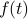
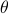

Finding Fourier coefficients
Rather than proving Fourier's scandal for any arbitrary  – and again, we don't know what ‘‘any’’ means yet – it's easier to start off with a simpler question:
If we know that can be written as a sum
then how do we find the values of the coefficients and  so that the RHS sums up to the LHS?
so that the RHS sums up to the LHS?
Notice the subtle difference: we're not trying to show that any is expressible as a fourier sum; we are given one that is, and we merely want to find the right coefficients to properly give us .
Massaging into a better form
There are many ways to express a sum of sinusoids. The one we wrote above – a sum of sines with of differing amplitudes and phases – is the easiest to intuitively understand, but it's the hardest to work with algebraically. That is, the expressions for the coefficients are going to be pretty messy and unenlightening. So it's well worth our time to massage the expression into other equivalent forms.
Sines and cosines
The first thing we can do is to use the sum and difference formulas to rewrite a sine with a phase shift as a sum of a sine and a cosine:
This form is a wee bit nicer, partly because we don't have the phases floating around in the arguments of our sinusoids anymore.The information about amplitude and phase is contained in the coefficients and . Note that We haven't lost any information; we're free to go back and forth between the two forms.
Making this change, our sum becomes
With the benefit of hindsight, we've renamed the constant term so that things work out nicer later.
Imaginary Exponentials
We can do better than this. By far (mathematically), the best way to work with sinusoids is in terms of imaginary exponentials.
Using complex exponentials is a common ‘cute’ trick in math and physics. I remember when I first encountered them in solving for E'n'M waves, it felt pretty awkward and uncomfortable; I didn't really know what I was writing. I never really grew out of the awkwardness; like many things in life, I guess once you see it enough, you just get used to it.
Now that I think about it, there's a few places where it's actually quite enlightening and helpful to think in terms of complex exponentials. When you're talking about damped harmonic motion (such as a spring-and-mass system in a bowl of syrup), the motion looks like a sinusoid inside a decaying exponential envelope; it's a bit nicer to just think in terms of an exponential with a complex exponent, where the real part is the decaying envelope and the imaginary part is the frequency. Or when you're talking about electromagnetic waves propagating in a dialectric (aka light travelling through a material), the real and imaginary parts of the dialectric constant correspond to absorptive losses that cause the light intensity to decay exponentially, or a phase shift (ie, light speeding up or slowing down) inside the material.
Okay enough of a tangent, back to the class.
Remember that Euler's formula relates imaginary exponentials to sinusoids:
We can visualize this fact on a complex plane by observing how the real and imaginary components of the complex phase oscillate as it rotates around the origin. It's a rather remarkable and beautiful fact that imaginary exponentials relate to sinusoids; the ordinary growing or decaying exponentials have nothing to do with periodicity!
I should say a bit more about how to interpret complex numbers like . The cleanest way to think about complex numbers is as points on the complex plane, where ‘‘pure phases’’ such as all fall on the unit circle, an angle of  radians from the x-axis. Since a rotation by  radians goes one time around the unit circle, it's clear that , because you wind up at the same point.
radians goes one time around the unit circle, it's clear that , because you wind up at the same point.
Functions such as represent a point that starts off on the x-axis and then goes around the unit circle  times per second. From this picture, it's pretty clear why we defined sines and cosines in terms of unit circles – the real component of the complex number is the sine of the angle, the imaginary component is the cosine, which is quite precisely what Euler's formula tells us.
times per second. From this picture, it's pretty clear why we defined sines and cosines in terms of unit circles – the real component of the complex number is the sine of the angle, the imaginary component is the cosine, which is quite precisely what Euler's formula tells us.
One other thing to note about functions of the form is that if the frequency is an integer, then every whole number of seconds, we wind around the circle an exact integer number of times and end up at the point again; in other words, if  is an integer, then .
is an integer, then .
If we flip the sign of the exponent in Euler's formula, we get a expression for . (This represents a complex number revolving clockwise around the origin as theta increases, corresponding to negative frequency!). If we take the appropriate linear combinations of these two expressions, we can solve for sine and cosine in terms of the imaginary exponentials:
Notice that the functions of positive theta turned into functions of positive and negative theta. As a result, the range of the frequencies in our Fourier sum is expanded. Rather than being restricted to positive frequencies , we are now summing over positive and negative frequencies . The  term corresponds to the constant offset term that we introduced.
term corresponds to the constant offset term that we introduced.
After doing a bit of algebraic tickling, we can now express our periodic as
where the new (complex!) coefficients  are given in terms of our old real coefficients and by
are given in terms of our old real coefficients and by
Notice that we are now expressing our real function in terms of complex quantities, which might feel a bit queasy, but Prof. Osgood soothed us by saying that there's really no ‘‘existential difficulty’’ to this affair. What we've discovered is something more like this: might in general be a complex function, but as long as the coefficients satisfy the symmetry property (where the overbar signifies the complex conjugate), then is guaranteed to be real.
Solving for the coefficients
After all this massaging, our problem can be phrased in a much more tractable and concise way:
Suppose we are given a periodic function that can be expressed as a weighted sum of exponentials as
How do we find the complex coefficients ?
It's time to perform the classic derivation of the Fourier coefficients.
Our goal is to solve for a particular coefficient — let's say the  'th coefficient . To isolate the , the first thing we might try to do is to separate the sum on the RHS into two parts, the term with
'th coefficient . To isolate the , the first thing we might try to do is to separate the sum on the RHS into two parts, the term with  and all the other terms with :
and all the other terms with :
If we shuffle around the terms so that the term is alone on the LHS, we end up with
To get by itself, we divide both sides by , or equivalently, multiply by (with a minus sign in the exponent), and end up with the expression
However, this expression isn't particularly useful for us, because all we've done by this point is express the 'th coefficient in terms of all the other coefficients! If we don't know any of the coefficients, we can't get anywhere.
Fourier's Trick
To proceed further, we'll pull a little rabit out of a hat, and do a little bit of calculus to make the the second term on the RHS disappear. David Griffiths likes to call this step ‘‘Fourier's Trick’’ because it's pretty clever and kind of magical. Later on in the course, I'm guessing we'll justify it in terms of the orthogonality of the basis functions, but for now, it's just a magic trick.
The trick is to integrate both sides of the equation from 0 to 1. There's no real motivation for why we want to do this quite yet (until we learn about orthogonality!), but at the least, we can justify the limits of integration 0 and 1 by appealing to the periodicity of . Since has period 1, all its information is contained in the range from 0 to 1; if we integrate over less than that, we'll miss some details, and if we integrate over more, we'll including redundant information because will repeat.
Anyways, we have three terms to integrate, and we'll consider them one-by-one.
The term on the LHS, , is just a constant that we can pull out of the integral; when we integrate it from 0 to 1, nothing happens because . So the LHS stays .
The first term on the RHS will look like , which, in principle, is a known value that we can compute. We know , we know what we're considering, so we just need to do the integral to figure out the value.
The last term on the RHS is where the magic happens: every single term in the sum becomes zero when you integrate from 0 to 1! To see why, consider what happens when you integrate any one of the terms. We can pull out the constant from the integral, and we're left with something of the form
which we can evaluate like any other exponential integral:
Now the crucial insight: Since is an integer, both of the exponentials on the RHS are just the exponentials of an integer multiple ; in other words, they both evaluate to 1. One minus one is zero, so the integral vanishes. So the entire sum over vanishes when we integrate from 0 to 1!
So to summarize: when we integrate both sides of the expression for , the LHS stays the same, the first term on the RHS doesn't simplify, and the second term on the RHS vanishes. Our final result is the formula for Fourier coefficients:
If a periodic function can be expressed by a weighted sum of exponentials as
then the Fourier coefficients are given by
There's a lot of things to be said about this statement, but classtime was over, so we'll have to hear them next time around.